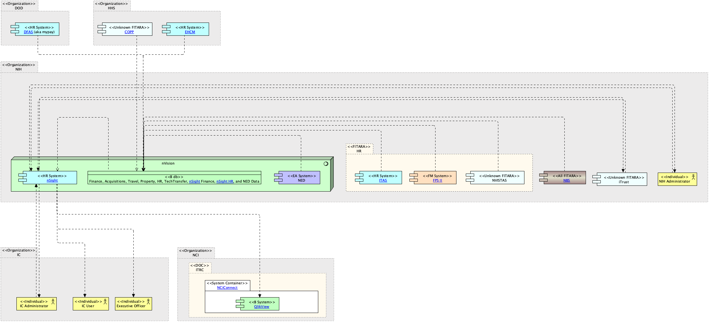

|
|
|
nVision : System Software (in HR Systems diagram / QlikView ArchiMate Diagram / nSight ArchiMate Diagram / NCI Business Applications ArchiMate Diagram / ITRC / NCI Email Group Generator Archimate Diagram / NED Cencus Validation ArchiMate Diagram / Admin Actions ArchiMate Diagram) . nSight : Application Component (in HR Systems diagram / QlikView ArchiMate Diagram / nSight ArchiMate Diagram / NCI Business Applications ArchiMate Diagram / ITRC)
ArchiMate Diagram - nSight ArchiMate Diagram
 link
link
| Jump to: |
|  |
| Model Elements |
| Name | Description | ||
|
|
Connections to database is provided by TNS connection rows a user is allowed to see is limited by VPD by there institute.
Contains:
HR data - Pay Biweekly, Demographics daily, Commission COR pay and FELLOWS is monthly
Finance data - is daily accept for commitments and obligation which is once an hour.
Travel - nightly
Property - nightly
Grants - nightly
NED - daily
Tech transfer - ?
Acquisitions - nightly.
FPS - is months
NOTES : Source data from POTS and AMBIS (acquisitions related). NBS only gets financial's from pots. Approvals, and specifics(vendors quantity) are gotten directly from POTS.
AMBIS only used by MIAID NBS gets just enugh for a requisitions |
||
|
|
https://nvision.nih.gov/nvision_registration/registration_guide.html#IntroductiontonVision
Contains
HR Data |
||
|
|
nSight – The nVision nSight HR application is a workforce planning and analytics application that will allow ICs to track, manage and plan their staffing needs for all staff types using a web based enterprise application while maintaining enterprise standards. nSight provides a full picture of an IC’s workforce which enables the planning and management of personnel, including tracking different types of staff and forecasting future staffing needs. In addition, nSight provides
System link - https://ccrod.cancergov/confluence/display/OMIT/nSight |
||
|
|
QlikView – COTs application for business intelligence, data discovery and dashboards. IC-led effort to provide dynamic reporting of enterprise and IC-owned data that complements the suite of reporting tools already provided by nVision Data Warehouse and QVR. Can use data from ODBC(oracle,db2 sql server, access), QVDS,Excel, ACCESS, XML
Sources
|
||
|
|
|||